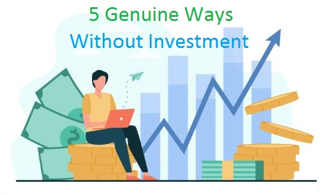

How To Earn Money Online Without Investment?

Making money online has become more accessible than ever, and the best part is, you don't always need to invest a significant amount of capital to get started. Whether you're looking to earn some extra cash or potentially replace your traditional 9-to-5 job, there are numerous opportunities available on the internet.
From freelancing and content creation to online tutoring and affiliate marketing, this article explores some of the most effective and proven ways to make money online without the need for upfront investments. So, if you're eager to explore the vast online landscape and harness your skills and creativity, read on to discover how you can turn your computer or smartphone into a source of income.
Table of Content
- Earn Money Online With Zero Investment
- Top Easiest Ways To Earn Online
- How To Start Freelancing as Beginner?
How To Host a Website For FREE For Lifetime?
Learn More: Click Here→
Here Are Some of the Best Ways To Make Money Online Without Investment
With many people currently at home, there's a rising interest in finding ways to earn money online from home without any investment. This applies to various individuals, including college students, homemakers, retirees, and even businesspeople seeking side gigs.
Indeed, there are numerous ways to earn money online without the need to invest a single rupee. This ensures you can explore these avenues without concerns about financial risks or consequences.
Is AI For Content Creation Copyright Free or Not?
Learn More: Click Here→
- Content Creation:
Probably the EASIEST and GENUINE way to make money online without or zero investment is content creation. It opens up a wide range of possibilities, accommodating various skills and interests. Whether your strengths lie in writing, photography, video production, or graphic design, the digital world offers abundant opportunities for you to exhibit your talents and turn them into a source of income.
Content creation encompasses numerous platforms, including blogging, vlogging, social media content creation, and podcasting. It not only enables you to express your unique perspective but also connects you with a global audience, potentially transforming your hobby or passion into a sustainable income stream.
- Through Freelancing:
Freelancing is a versatile and accessible route to making money online without any upfront investment. It allows individuals to offer their skills and services to clients from around the world on a project-by-project basis.
Whether you're a writer, graphic designer, web developer, digital marketer, or possess any other marketable skill, freelancing platforms such as Upwork, Fiverr, and Freelancer provide a platform for you to showcase your expertise. By creating a profile and listing your services, you can attract clients seeking your specific skills. The beauty of freelancing lies in its flexibility; you choose the projects you want to work on, set your rates, and decide your working hours.
- Dropshipping Business:
If you're looking for an online money-making venture that doesn't require you to invest in inventory or manage complex logistics, dropshipping might be the answer. This business model lets you sell products to customers without ever holding the physical stock. Here's how it works: you partner with suppliers who handle inventory and shipping, and you only purchase the products when you make a sale. This means you can start a retail business online with minimal upfront costs.
In a dropshipping business, your primary focus is on marketing and customer service. You create an online store, choose products to sell, and promote them through various online channels. When a customer places an order, the supplier ships the product directly to the customer, eliminating the need for you to deal with inventory management and shipping hassles. It's a convenient way to enter the world of e-commerce without significant financial risk. In this article, we'll delve into the essentials of starting and running a successful dropshipping business, helping you explore this promising avenue for making money online.
- Web and App Development:
Web development involves designing and building websites, while app development focuses on creating mobile applications for smartphones and tablets. Both fields are in high demand, as businesses and individuals continuously seek to establish their online presence and create user-friendly software.
he beauty of web and app development is that you can start with minimal investment. All you need are a computer, an internet connection, and coding skills. You can learn programming languages like HTML, CSS, JavaScript, and Python through online courses and resources. Once you've honed your skills, you can offer your services to clients looking for website or app development. Freelancing platforms, job boards, and networking can help you find projects and build a portfolio.
- Selling Local/Homemade Products Online:
If you have a talent for crafting or creating unique products, you can turn your skills into an online business without a substantial upfront investment. Whether it's homemade candles, artisanal jewelry, handcrafted clothing, or even locally sourced goods, the internet offers an excellent platform to showcase and sell your creations to a global audience.
Start by setting up an online store on platforms like Etsy, eBay, or even your website. Showcase high-quality photos of your products and write compelling descriptions to attract potential buyers. Utilize social media and digital marketing to promote your products and connect with potential customers.
One of the advantages of selling local or homemade products online is the ability to scale your business gradually. As you gain more customers and sales, you can reinvest your profits into expanding your product line or marketing efforts.
How To Do Keyword Research For SEO?
Learn More: Click Here→
Top Trending Niche For Blogging/Content Creation
Learn More: Click Here→
How To Get Google Adsense Approval Easily?
Learn More: Click Here→
SIMILAR POSTS
Top Easiest Ways To Make Money Online

In this blog post, we will be exploring 7 easy ways to make money
online from the comfort of your own home. By following these tips, you can start
your journey towards earning an online income.
Click The Button Beside To Learn More: Click Here→
How To Start Freelancing as a Beginner?

Freelancing is self-employment where you offer your skills and services to clients or companies. You have the freedom to choose your projects, clients, and work hours. To begin, identify your niche, build a strong online presence, use freelancing platforms or networks to find clients, set competitive rates, and manage your taxes and finances effectively.
This independence can be very rewarding, but it also
requires a high level of self-motivation and discipline to be successful. So, What actually freelancing
is?, How can someone start freelancing?
Click The Button Beside To Learn More: Click Here→